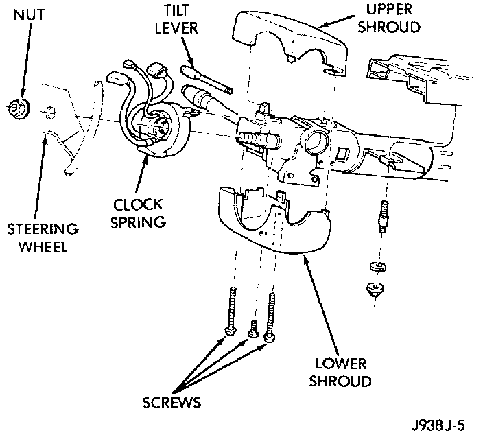

Clockspring Assembly / Spiral Cable: Service and Repair
WARNING: THE AIRBAG SYSTEM IS A SENSITIVE, COMPLEX ELECTROMECHANICAL unit BEFORE ATTEMPTING TO DIAGNOSE OR SERVICE ANY AIRBAG SYSTEM OR RELATED STEERING WHEEL, STEERING COLUMN, OR INSTRUMENT PANEL COMPONENTS YOU MUST FIRST DISCONNECT AND ISOLATE THE BATTERY NEGATIVE (GROUND) CABLE. THEN WAIT TWO MINUTES FOR THE SYSTEM CAPACITOR TO DISCHARGE BEFORE FURTHER SYSTEM SERVICE. THIS IS THE ONLY SURE WAY TO DISABLE THE AIR BAG SYSTEM. FAILURE TO DO THIS COULD RESULT IN ACCIDENTAL AIRBAG DEPLOYMENT AND POSSIBLE PERSONAL INJURY.1. Turn the steering wheel until the front wheels are in the straight-ahead position before starting the procedure.
2. Disconnect and isolate the battery negative cable. If the airbag has not been deployed, wait two minutes for the system capacitor to discharge before further service.
3. Remove the airbag module.
4. If the vehicle is so equipped, unplug the wire harness connectors for the vehicle speed control switches and remote radio switches.
5. Remove the steering wheel with a steering wheel puller (Special Tool C-3428B).

6. Remove the upper and lower steering column shrouds to gain access to the clockspring wire harness connectors.
7. Unplug the wire harness connectors from the clockspring.
8. Remove the lower fixed column shroud.
9. Unplug the wire harness connector between the clockspring and the instrument panel wire harness near the base of the steering column.
10. To remove the clockspring, lift the locating fingers of the clockspring assembly from the steering column as necessary. The clockspring cannot be repaired. It must be replaced if faulty, or if the airbag has been deployed.
11. When installing the clockspring, snap the clockspring onto the steering column. If the clockspring is not properly positioned, see Clockspring Centering in this group before installing the steering wheel.
12. Plug the clockspring wire harness connector into the instrument panel wire harness. Be certain that the wire harness locator clips are properly seated on the outside of the wiring trough and that the connector latches are fully engaged.
13. Reinstall the steering column shrouds. Be certain that the clockspring wire harness is inside the shrouds.
14. The front wheels should still be in the straight-ahead position. Install the steering wheel being certain to fit the flats on the hub of the steering wheel onto the formations on the inside of the clockspring. Pull the wire harness from the clockspring through the upper and lower holes in the steering wheel hub. Tighten the steering wheel nut to 61 N.m (45 ft. lbs.). Be certain not to pinch the wiring between the steering wheel and the nut,
15. If the vehicle is so equipped, plug in the vehicle speed control switch and remote radio switch wire harness connectors.
16. Install the airbag module.